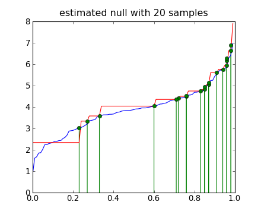
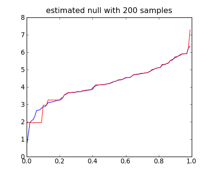

| Nutmeg in Python |
This page contains high level descriptions of the various data classes found in Nutmeg-Py.
Before describing the domain-specific data, one architectural decision concerning data deserves special attention.
The array_pickler_mixin class of objects essentially can save-itself-to/load-itself-from a file on disk, in the “npy” format defined for a Numpy array (an ndarray). These two functions are defined on an array_pickler_mixin object through its methods save() and load(). By inheriting from this class, many objects throughout Nutmeg-Py gain this mechanism, at the cost of having a mildly templated definition.
The saving/loading is accomplished by rolling all of an object’s data into a special, flexible ndarray called a structured array, where each slot of the array holds a pointer to some Python data type. The pattern that must be followed in order for a class of objects to also be an array_pickler_mixin is described as follows (from the class docstring):
- _argnames – the list of names of positional arguments in the constructor
- _kwnames – the list of names of keyword arguments in the constructor
- ndarray
- array_pickler_mixin subclass
- any type that can be reconstructed such that a == type(a)(asarray(a)) (this is satisfied by many built-in types)
- any type that has special staticmethods ‘_array_from_{attr}’ and ‘_reconstruct_{attr}’ defined on the class. The first method creates an ndarray from an object of this type, and the second one reconstructs an object in a round-trip sense.
The main idea is that all of the information needed to construct each object is saved within the object, and enables the object to be recreated later (from data off the disk). Thus, the array_pickler_mixin is intended to be used to represent objects that are essentially a list of data and metadata.
The construction signature, then, must be along the lines of:
>>> def __init__(self, data1, data2, info1, option1=True, option2='auto'):
Additionally, each of these positional and keyword arguments must be then defined as attributes on the object (although this will happen automatically, as described in a moment).
To inform the object of its own structure, the class must be defined with a list of its data and metadata attributes–the _argnames and _kwnames class-level lists. Each list has a distinct constraint. It is important that _argnames lists the attribute-names of the positional arguments in order, and that _kwnames lists exactly the same names as the corresponding attributes. Good examples of these principles can be found in the class docstring, as well as in the class tests.
The most basic array_pickler_mixin simply lists arguments and keyword arguments. In addition to saving and loading, the naming of attributes is done automatically, due to a “bucket” design. For example:
>>> from nutmeg import utils
>>> class A(utils.array_pickler_mixin):
... _argnames = ['la', 'di', 'da']
...
>>> a1 = A(1, 'two', (3,4,5))
>>> a1.la, a1.di, a1.da
(1, 'two', (3, 4, 5))
More rich objects, of course, will model the questions being asked about the data, and will only fall back on this mixin class in order to save/load the data.
Most data types can be saved and loaded without a fuss, as they fall into the first three categories under item “5” in the list above. For more complicated objects, an array_pickler_mixin may define a pair of static methods that translate the attribute to/from an ndarray. For example, the Beam class must translate its coordmap attribute, which is an object defined from the NIPY library. You can see that the class has specially named static functions that convert coordinate mapping information through the two methods parameterize_cmap() and cmap_from_array().
The first challenge of the Nutmeg-Py project was to translate the existing Matlab based data representation into a Python class.
From what I can tell, all spatially normalized NUTMEG data has been reconstructed and resampled on a spatial grid with a common spatial offset that I have encoded thus:
>>> from nutmeg.core import beam
>>> beam.BEAM_SPACE_LEFT, beam.BEAM_SPACE_POST, beam.BEAM_SPACE_INF
(-90.0, -125.0, -70.0)
Therefore, all the data-grid-index coordinate to world-space-position coordinate transformations are 4D affine matrices parameterized only by the voxel grid size.
Despite the fact that Nutmeg-Py does not directly support 4D volumetric timeseries data, the principle of hierarchical abstraction demanded that the basic class for MEG data be based on the 4D “beam” structure from NUTMEG.
The Beam type is an array_pickler_mixin that holds voxel-wise reconstructed MEG data.
The signal data from a Beam is held in a format appropriate to an ROI. The volumetric interpretation of the data is established from:
The much more richly developed class of data is the TFBeam. In addition to being a Beam, as described above, in every way, a TFBeam also has a dimension of frequency bands in its signal. Therefore, the signal data is held as a 3 dimensional table of time-frequency grids, whose first dimension index again corresponds to the ROI coordinates lookup.
A TFBeam’s signal array may take three forms:
In the case of the first two conditions, a TFBeam can be used in a variety of ways to expose different comparisons. This is accomplished through special properties on the object called “one time properties” [1]. These are effectively methods that appear to be attributes, and that cache their results for future performance. There are several comparisons that can be made, enumerated in TFBeam.signal_transforms.
Take this mock construction of a TFBeam for example:
>>> from nutmeg.core import tfbeam
>>> import numpy as np
>>> voxsize = [5, 5, 5]
>>> voxels = utils.voxel_index_list((10,10,10))
>>> voxels
array([[0, 0, 0],
[1, 0, 0],
[2, 0, 0],
...,
[7, 9, 9],
[8, 9, 9],
[9, 9, 9]])
>>> samp_rate = 1000.0
>>> timepts = np.linspace(0,100/samp_rate,100)
>>> sig_activ = np.random.rand(10*10*10, 100, 2) # POWER SAMPLES, MUST BE > 0
>>> sig_baseln = np.random.rand(10*10*10, 100, 2)
>>> from nutmeg.core import beam
>>> coreg = beam.MEG_coreg('', '', np.eye(4), np.eye(3))
>>> coreg.meg2mri
AffineTransform(
function_domain=CoordinateSystem(coord_names=('x+LR', 'y+PA', 'z+SI'), name='', coord_dtype=float64),
function_range=CoordinateSystem(coord_names=('x+LR', 'y+PA', 'z+SI'), name='', coord_dtype=float64),
affine=array([[ 1., 0., 0., 0.],
[ 0., 1., 0., 0.],
[ 0., 0., 1., 0.],
[ 0., 0., 0., 1.]])
)
>>> bands = np.array([ [0,25], [25,60] ])
>>> time_win = np.array( [ timepts, timepts+1/samp_rate] ).T
>>> tfb = tfbeam.TFBeam(voxsize, voxels, samp_rate, timepts, (sig_activ, sig_baseln), coreg, bands, time_win)
Now, the various comparisons can be accessed by name:
>>> tfb.pseudo_f.shape
(1000, 100, 2)
>>> tfb.f_db.shape
(1000, 100, 2)
Alternatively, the tfb.uses property controls what signal comparison is exposes through the special tfb.s property:
>>> tfb.uses
'F dB'
>>> (tfb.s == tfb.f_db).all()
True
>>> tfb.uses = 'f raw'
>>> tfb.uses
'F raw'
>>> (tfb.s == tfb.f_raw).all()
True
Furthermore, in order to minimize the memory footprint of these objects, one can fix the comparison to a single method, either before or after the fact. The storage advantage here is that only one (nvox, ntime, nfreq) sized array is stored, rather than separate signal components, and one or more comparisons:
>>> tfb_fraw = tfbeam.TFBeam(voxsize, voxels, samp_rate, timepts, (sig_activ, sig_baseln), coreg, bands, time_win, fixed_comparison='f raw')
>>> tfb_fraw.uses
'F raw'
>>> (tfb_fraw.s == tfb.f_raw).all()
>>> tfb.fix_comparison('f raw')
>>> tfb.uses
'F raw'
>>> (tfb_fraw.s == tfb.s).all()
True
Once the comparison has been fixed, you’ll also notice that different comparisons are, of course, unavailable:
>>> tfb_fraw.uses = 'f db'
------------------------------------------------------------
...
RuntimeError: ratio type f db not available, see TFBeam.signal_transforms
>>> tfb_fraw.pseudo_f
------------------------------------------------------------
...
RuntimeError: This signal transform no longer available on this object: pseudo_f
The remaining case for signal data is when there is only one component provided, and it is presumed to be a precomputed active-to-control comparison. To discourage confusion as much as possible, one is not allowed to construct a TFBeam from such data without providing a label for the comparison (using the fixed_comparison keyword argument):
>>> tfb = tfbeam.TFBeam(voxsize, voxels, samp_rate, timepts, sig_activ, coreg, bands, time_win)
------------------------------------------------------------
...
ValueError: Ambiguous signal argument has only 1 component and no fixed active to noise
comparison has been specified. The signal should have at least 2 components
corresponding to (active, control, [noise]).
>>> tfb_active = tfbeam.TFBeam(voxsize, voxels, samp_rate, timepts, sig_activ, coreg, bands, time_win, fixed_comparison='Active Power')
>>> tfb_active.fixed_comparison
'Active Power'
>>> tfb_active.uses
'Active Power'
No s_beamtf* file records the comparison type. If the data contained therein are not in separate components, then the TFBeam object constructed from the s_beamtf file is tagged as having an “unknown” comparison. It is strongly recommended to correctly label this comparison, if it is known!
>>> nm_tfbeam = tfbeam.TFBeam.from_mat_file('workywork/nutmeg-py/data/s_beamtf12_avg.mat', fixed_comparison='f db')
>>> nm_tfbeam.uses
'F dB'
or:
>>> nm_tfbeam = tfbeam.TFBeam.from_mat_file('workywork/nutmeg-py/data/s_beamtf12_avg.mat')
>>> nm_tfbeam.uses
'unknown'
>>> nm_tfbeam.fix_comparison('F dB')
>>> nm_tfbeam.uses
'F dB'
These data objects all encapsulate results of an SnPM (statistical non-parametric map) test. These tests follow the framework described in [Nichols_Holmes_2001]. The various flavors of statistical results have the following points in common:
The structure of the arrays representing the results is helpful to remember in order to understand the various operations.
These represent the extreme test results, across all tested voxels, at each permutation (repeated per time bin, per frequency bin).
The first is simply the natural stat score under the true data arrangement. The latter is the “normalized ranking” of the natural stat score, ranked from high to low. That is, if the natural stat score for vox_stat(r) is 75th lowest out of 100, then vox_stat_ranking(r) = 0.75. In other words, it is the point on the empirically derived CDF(T < t, r) for a given voxel, and the natural stat score at that voxel.
As a depature from MATLAB Nutmeg, storing the extreme stats maps allows for re-computing thresholds and p-values under different rules currently, and yet-to-be, defined.
One of the most important features of the TimeFreqSnPMResults types is the ability to combine statistics across different dimensions. This behavior is managed by the _fix_dist() method.
Ultimately, we’re looking for a threshold or map in three dimensions: (N_vox, N_time, N_freq). Normally, this threshold is determined by the null distributions found for each (time, freq) image. In pooled dims mode, we take distributions across the chosen dimensions–either (time,), (freq,), or (time, freq)–and aggregate them in order to form a more fine grained null distribution.
On the other hand, one can correct across time and/or freq dimensions in order to further correct for the multiple comparisons problem. In this mode, rather than aggregating null distributions, we instead replace the extreme statistic at each bin in the chosen dimensions with the extreme statistic across all bins in those dimensions.
MATLAB Nutmeg results stored in s_beamtf* files can be converted to TimeFreqSnPMResults. The original null distributions are estimated by the relationship between the natural stats and the corrected p scores. The estimation process is conservative, in the sense that the maps for a given p value calculated on the estimated data are a subset of the original maps for that p value.
Here is a worked example of estimating the original null distribution. We simulate an empirical null of maximal statistics generated from 100 permutations, in addition to a relatively small sample of natural statistic scores. By using the statistics and the associated p scores, we recover an estimated null distribution. Here’s a plot of the inverse of the CDF( T <= t ) function of both distributions.
import numpy as np
import nutmeg.stats.stats_utils as su
import matplotlib.pyplot as pp
# simulate some maximal null distribution from 100 permutations
null = np.sort(np.random.normal(size=(100,), loc=4, scale=1.2))
# create test scores from our experiment
# (but for ease of demonstration, clip the values to be within the null dist)
t_scores = np.clip(
np.random.normal(size=(20,), loc=5, scale=0.8),
null.min(), null.max()*.99
)
# Score the t_scores based on the empirical null distribution
index = su.index(t_scores, null)
p_table = np.linspace(1,0,len(null)+1,endpoint=True)
p_scores = np.take(p_table, index)
# Now, try to recover the null distribution, based on these few
# T-score and P-score pairs -- use the negative edges
edges, pbins = su.map_t(-t_scores, p_scores, 1/100.)
edges = -edges[::-1]
p_recovered = np.array(
[ ( edges > t_scores[i] ).sum() for i in xrange(len(t_scores))]
)
assert (np.round(p_scores*100) == p_recovered).all()
probability = np.arange(100)/100.
si = np.argsort(p_scores)
print np.round(p_scores[si]*100), t_scores[si]
pp.plot(probability, null)
pp.plot(probability, edges, 'r')
x_locs = 1 - 1/100. - p_scores
y_mins = [0] * len(x_locs)
y_maxs = t_scores
pp.vlines(x_locs, y_mins, y_maxs, colors='g')
pp.plot(x_locs, y_maxs, 'go')
pp.gca().set_title('estimated null with 20 samples')
pp.show()
[source code, hires.png, pdf]
You can see this estimated distribution has the property of having a equal or greater threshold for each quantile than the original distribution, and that the threshold is determined by the minimum known statistic within a given quantile range. The exceptions are the quantile range outside of the known p values, which are set to an arbitrary value outside of the known statistic range.
Typically there are many more samples of the statistic-to-p-value relationship than there were samples on the null distribution. This, fortunately, improves the estimate (within the sampled range).
[source code, hires.png, pdf]
Cluster level analysis is also an option when running the SnPM tests. This analysis follows the framework of [Hayasaka_Nichols_2004]. Along with all the results and capabilities of the TimeFreqSnPMStats, the TimeFreqSnPMClusters object can make thresholds based on cluster statistics, which are calculated from one of various “combining functions” specified in the paper.
More information to follow.
| [Nichols_Holmes_2001] | T. Nichols and A. Holmes. Nonparametric Permutation Tests For Functional Neuroimaging: A Primer with Examples. Human Brain Mapping, 25:1-25 |
| [Hayasaka_Nichols_2004] | S. Hayasaka and T. Nichols. Combining voxel intensity and cluster extent with permutation test framework. NeuroImage, 23:54-63 |
{kind=link}
{kind=link}